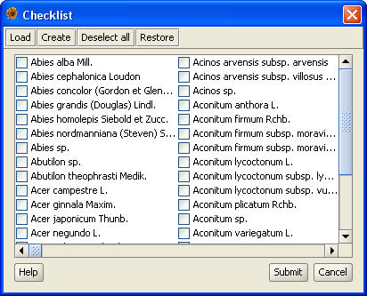
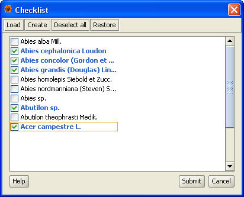

The Checklist simplifies adding of plants that were found at the same place. You just select the plants from the list of all available plants. The Checklist can be accessed when adding the Occurrence data.
When first opened the Checklist contains the list of all plants that are available in the database. There can be several thousands of plants. In order to navigate in the list easily, you can use the arrow keys. In order to move to the desired record even more quickly you can type the first letters of the plant's name and the Checklist will display the first suitable choice. For instance: if you type the letters Z, E, L, K quickly enough, the Checklist will move to the "Zelkova serrata (Thunb.) Makino". The search is case insensitive. The longest delay between two consecutive characters is one second; after that the characters start another search.
You can both select and deselect a record by either left-clicking on it or pressing the spacebar. In order to cancel the selection of all plants click on the "Deselect all" button.

After the selection of plants is finished, click on the "Insert" button and the selected plants will be inserted into the list of plants in the Overview.
If you feel that the list of all plants is too long and working with it is unpleasant, because there are only a few hundreds of plants in the processed locality, you can create your own Checklist.
You must select all plants you want to have in the final Checklist. Then press the "Create" button and save the list into a file so that you can easily reuse the Checklist in the future by pressing "Load".
You own Checklist may look like this:

If you press the "Restore" button the Checklist will return to its initial state (containing all the plants available), but it will not cancel the list of currently selected plants. This is very useful if a plant or two are not in your own Checklist; just click on the "Restore" and select the missing plant from the complete list of plants.